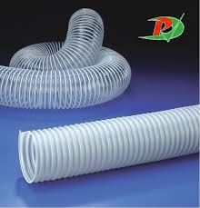
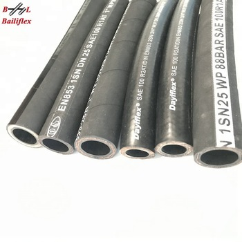
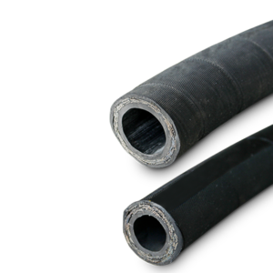
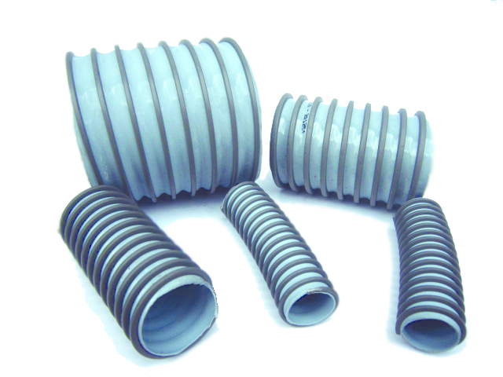
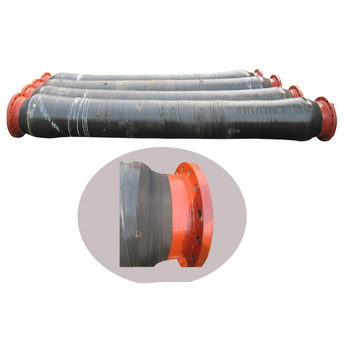
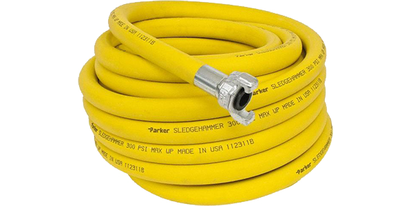

Manguera Hidraulica Aire VacioApropiada para aspiración de partículas en suspensión en plantas industriales, donde se generan partículas volátiles o aserrines de madera. Temperatura +5 °C a 50 °C (41 ° F a 122 °F). | Manguera Hidraulica de alta presionSon llamadas mangueras de dos alambres porque generalmente tienen un refuerzo de dos trenzas de alambre de acero de alta tensión. | Manguera Hidraulica de baja presionDiseñadas para usarse en diferentes aplicaciones con presiones de operación por debajo de los 300 PSI. | |||
|---|---|---|---|---|---|
Manguera Hidraulica CorazaRecubrimiento de cableado eléctrico, protección y ordenamiento de líneas neumáticas, protección de líneas mixtas de electricidad. | Manguera Hidraulica DragaNegro, fabricado en caucho natural. Refuerzo: Múltiples capas de Nylon de alta tensión con espiral de alambre de alto carbono. Factor de seguridad 4 a 1. | Manguera Hidraulica Minera |